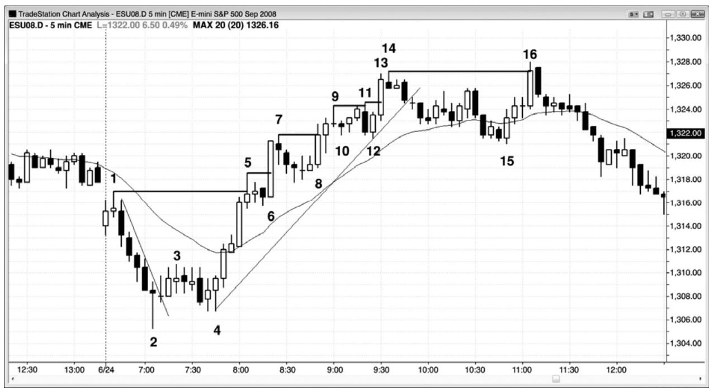
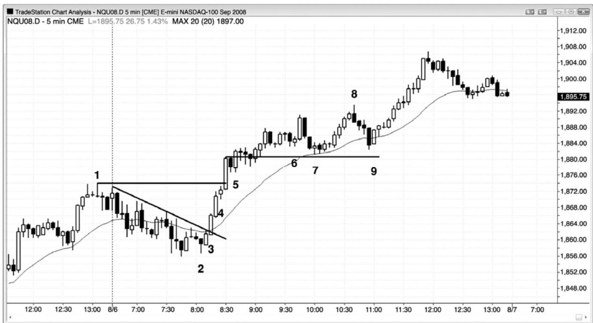

第4章 现有强趋势中的突破入场¶
第 4 章 现有强趋势中的突破入场
当一轮趋势很强，而且出现回撤时，每个超越前一极点的突破都是一个准确的顺势入场。突破通常拥有很高的成交量、一条大型突破棒（一条强趋势棒）、以及在下几棒的坚持到底。显然聪明钱正在突破入场。但是，突破交易很少是最好的方式，价格行为交易者几乎总是会找到一个更早的价格行为入场，比如多头趋势中的高点 1 或高点 2。重要的是认识到，当趋势很强时，你可以在任意时间入场，如果使用足够宽松的止损，那么总是可以赚到利润。一旦交易者们看到一轮强趋势，那么有些交易者不会选择第一个入场，因为他们希望出现较大的回撤，比如朝向均线的两条腿回撤。举例说明，如果市场刚刚变为明确的总在场内多头，而且初始多头尖峰有三条尺寸不错、尾线很短的多头趋势棒，那么交易者可能担心那波运动只是一段很小的高潮，于是希望等待高点 2 买进架构。但是，当趋势像这样强时，头几个入场通常只是高点 1 买进架构。积极的交易者们将把限价单设在前一棒低点下方买进，预期任意反转尝试将会失败。一旦市场跌破前一棒低点，他们将预期一个高点 1 买进架构引出至少一个新高，也可能是一波向上的测量运动，基准是多头尖峰的高度。如果交易者们未能抓住这两个早期入场，那么他们应该训练自己保证自己进入这轮强趋势。当他们看到回撤正在开始时，他们应该在尖峰高点上方 1 个跳动处设定一张买进止损单，以防回撤只有一棒，然后便快速向上反转。如果他们未能抓住早期回撤入场，而且市场开始快速上涨，那么他们会想尽办法入场，不要被甩在后面。在最强的交易中，你通常会看到，向上突破多头尖峰的那一棒通常是一条大型多头趋势棒，这就在告诉你，很多强势多头认为在新高买进是有价值的。如果对于他们中的那么多人来说是一个很棒的入场，那么对于你来说也是一个很棒的入场。
判断趋势强弱的一种快速的方法是看它在突破超越先前趋势极点后的反应。举例说明，如果一轮多头趋势出现一个回撤，然后向上突破当日高点，那么它在突破处找到了更多的买家还是更多的卖家呢？如果市场向上运动的幅度足够大，突破型买家至少能够赚到一笔刮头皮交易的利润，那么突破找到的买家数量就多于卖家。那是强趋势的标志之一。反之，如果市场快速上涨至一个新高，但是在一两棒内便向下反转，那么突破找到的卖家数量多于买家，那更像是交易区间的特征，市场可能转变进入交易区间。观察市场在新高处的反应，将给出趋势实际强弱的线索。即便趋势仍然在起作用，它也不如之前强劲，多方应该在新的极点获利了结，甚至准备做空，而不是在突破至新高时买进，或者准备在小幅回撤买进。空头趋势中的情形刚好相反。
总之，如果你正在一个新的极点利用止损单入场，那么你应该把大部分或者全部交易做刮头皮，除非趋势特别强劲。如果趋势特别强劲，那么你可以把大部分或全部头寸波段化。举例说明，如果市场处于强多头趋势中，多方将利用止损单在最接近的高点上方买进，但是大多数都是做刮头皮交易。如果市场异常强劲，那么他们可能把大部分头寸波段化。否则，空方将在每个新的高点利用限价单做空，把入场价格设在原来的波段高点或略高处，他们将随着市场上涨而加仓。如果市场在他们首次入场后下跌，那么他们将获利出场。相反地，如果市场继续上涨，那么他们预期原来高点将在几棒内被一个回撤测试，这将允许他们在盈亏平衡点退出首次入场的交易，在更高价位入场的交易将有所获利。

如图 4.1 所示，从棒 4 更高低点开始的反弹成为一轮强多头趋势（趋势线突破后的更高低点），当市场反转通过当日高点棒1 时，一连出现7条多头趋势棒。当动能那样强时，每个人都同意棒 5 将被超越，然后市场才可能下跌至多头趋势的起点棒 4 下方。市场处于总在场内状态（译注：这里作者没有写明是多头还是空头状态，根据上下下判断应该是多头状态），很可能形成一波近似的向上的测量运动，高度为从棒 4 到棒 5 的多头尖峰，或者从棒 1 到棒2 的开盘区间，所以多方会在市价、任意回撤、任意一棒的低点或低点下方、任意回撤的高点上方、任意一棒的收盘买进，也会在最近的波段高点上方利用止损单买进。
突破型交易者会在前一波段高点上方买进，比如在棒5、6、8、11、13和16。截止棒5，市场明显处于总在场内上涨状态。积极的多头将利用限价单在前一棒低点买进，预期初始回撤只有一棒左右，市场将在高点 1 向上反转。在前一棒下方买进通常比在高点 1 上方买进会获得更低的入场价位。如果交易者喜欢使用止损单入场，而不是在棒 5 后一棒的低点买进，那么他们会在棒 6 高点 1 入场棒向上超越前一棒时买进。反之，如果他们希望出现更深的回撤，比如均线处的高点 2 架构，而不选择上述两个入场，那么他们需要防止错过强趋势。他们永远不应让自己被套出一轮很棒的趋势。这样做的方法是，在棒 5 多头尖峰高点上方 1 个跳动处设定一张最坏情况买进止损单。入场价位可能有点高，但至少他们会进入一轮很可能继续上涨一波测量运动的趋势，测量运动的基准是多头尖峰的高度。棒 6 是一条没有尾线的大型多头趋势棒，表明很多强势多头正在同一棒买进。一旦交易者们看到强势多头在创出新高的突破买进，那么他们应该放心地认为交易很棒。他们的初始保护性止损位于最近的微型波段低点下方，即棒 6 前面的高点 1 信号棒下方。
回撤型交易者将在下列每个突破回撤入场，它们是多头突破——比如在棒 6 高点 1、棒 8高点2、棒10失败的楔形反转、棒12高点2和失败的趋势线突破（未画出）、以及均线下方的棒 15 高点 2 测试（第一个均线缺口棒买进架构），棒 15 还与棒 12 构成一个双重底（高点2 是根据从棒 14 开始的两条清楚的、较大的下跌腿计数得出的）。突破型交易者恰好在价格行为交易者卖出多头获利了结的区域新建多头头寸。总之，在大量聪明交易者正在卖出的位置买进，是不明智的。但是，当市场很强时，你可以在任意位置买进，包括高点上方，而且仍会获利。但是，在回撤买进的风险/回报比要比在突破买进的风险/回报比好很多。
盲目地在突破买进是愚蠢的，聪明钱不会在棒 11 突破买进，因为它可能是在异常强的突破棒棒 6 重置计数并形成第一次上推后的第三次上推。另外，他们也不会在棒 16 突破买进，那是趋势线突破后对棒14处原来高点的测试，形成一个更高高点，趋势反转的风险太高。最好在突破失败后做反向交易，或者在突破回撤后在突破方向上入场。当交易者们认为突破看起来太弱而不买进时，他们常常会在前一高点及其上方做空。
通过在突破做空和在市场走高时加仓，空方可以利用超越先前波段高点的突破赚钱。然后，当市场返回测试突破点时，他们可以退出他们的整个空头头寸，二次入场的交易获利，初次入场的交易在盈亏平衡点附近了结。如果空头在市场向上超越棒 5、7、9 和 14 时做空，那么他们可能采用这种策略。举例说明，当市场从棒 7 波段高点回撤时，空方将在那个高点或略高处下单做空。他们的做空订单将在棒 8 被执行。然后，当他们认为市场可能开始再次回撤，或者在上涨几点后将会回撤时，他们会增加自己的空头仓位。然后，他们尝试用限价单在最初的入场价位了结全部空头交易，即棒 7 高点。因为空方正在突破测试处买回他们的空头，因为多方正在同一区域增加他们的多头，所以回撤常常在那一价位结束，然后市场再次上涨。
P63
棒 4 处的向上反转，是对空头趋势的最终旗形的突破。有时，最终旗形反转开始于更高低点，而不是更低低点。对原有极点的测试，可能超越原有极点，也可能没有触及原有极点。棒15是多头趋势的最终旗形的终点，棒 16处的反转棒开始于一个新的极点（一个更高高点）。

如图 4.2 所示，昨天（只有看到最后一小时）是一个开盘起强多头趋势日，所以今天出现足够多的坚持到底，收盘于开盘价之上的可能性很高，尽管今天开盘出现一个回撤，多头趋势也很可能至少形成一个象征性的新高。交易者们都在等待买进架构的出现。
棒 2 是高点 4 买进架构之后的一个小幅更高低点，与昨天最后一次回撤形成一个双重底。信号棒拥有一个空头收盘，但至少它的收盘价高过中点。错过那个入场的交易者们看到市场在接下来的两三棒形成一个很强的多头尖峰，认为市场现在已经成为总在场内多头市场。聪明的交易者们会至少以市价买进一个小型头寸，以防市场在大幅上涨后才会出现回撤。
突破处有两条大型多头趋势棒，每一条都有着很强的收盘，而且尾线很短。如果你已经在棒 3 收盘价做多，那么此时应该把部分交易波段化。也就是说，如果代改为持平，那么可以在市价买回相同规模的头寸，并且把早先可以用来买进的价位用作止损。那一止损现在位于棒3强多头趋势棒下方。
棒4是一条暂停棒，略低于昨日高点，在它的上方1个跳动买进，是又一个不错的入场。
暂停棒是一种可能反转架构，因此，在它的高点上方买进，就是在提早入场的空头买回他们的空头的位置做多，早先离场的多头也会在那一位置买回他们的多头。
在这一点，趋势明朗、强劲，你应该在每个回撤买进。
棒 6 之后是一个双棒反转，是第三次上推，是一个可接受的做空架构，预期市场向均线回撤。
棒 8 是一个合理的逆势刮头皮机会（在趋势线突破后，向新高的突破失败），原因是它是一条很强的空头趋势棒，是一个扩张三角形顶，但趋势仍然是向上的。注意，还未出现低于均线的收盘，市场已经在均线上方行进了 20多棒，两者都是趋势强劲的征兆。如果你打算做逆势刮头皮，那么仅当你会在趋势向上反转时立即准备做多的情况下做逆势刮头皮。你不希望退出多头，做空头刮头皮，然后错过趋势恢复后的上涨波段。如果你不能可靠地应对方向的两次变化，那么不要做逆势交易；只要持有多头就好。
棒 9 是首条收盘低于均线的棒线之后的一条多头内包棒，是双棒反转的第二棒，所以预期向上突破该架构后，市场最低会测试多头高点。